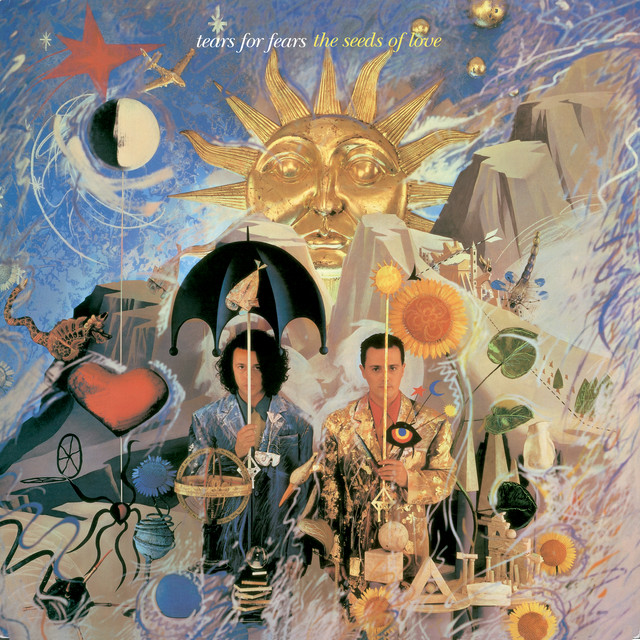
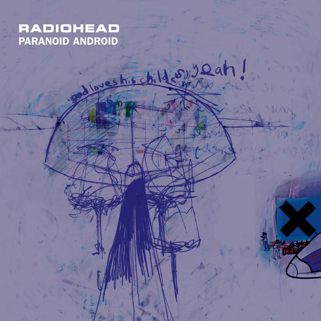
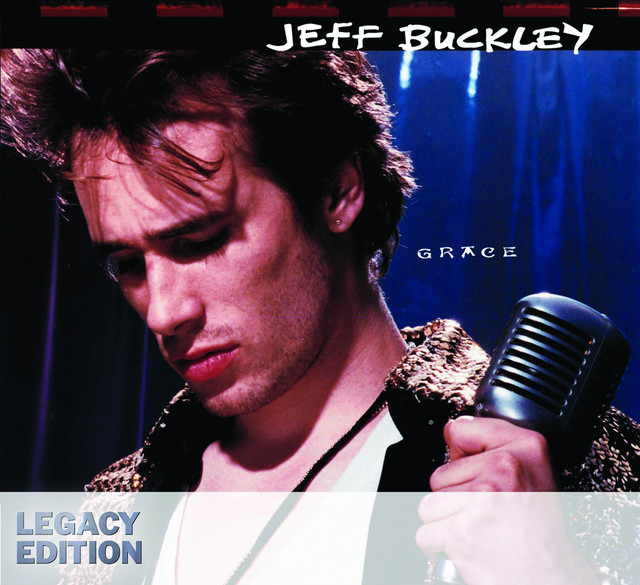

Olá, pessoal! Sejam bem-vindos a mais uma lista Top 5 feita por mim. O tema de hoje são as cinco melhores músicas que já ouvi em toda a minha vida. Esta lista foi relativamente fácil de elaborar, pois, mesmo ouvindo novas músicas com frequência, ainda não encontrei canções que alcancem o mesmo nível de excelência que as que mencionarei aqui. Lembrando que a lista de hoje não segue uma ordem específica! As músicas listadas aqui são, na minha opinião, verdadeiras obras de arte.
Então, vamos começar!
the BLACK seminole. - Lil Yatchy
Essa música definitivamente me chamou a atenção desde a primeira vez que a ouvi. Ela te leva por uma viagem sonora insana, desde o solo de guitarra emocionante até a parte final, que arrepia. Uma faixa de rock psicodélico feita por um rapper — prova de que a música é realmente para todos.
Year of the Knife - Tears for Fears
Essa música é uma explosão de ideias, assim como todo o álbum em que ela se encontra. No entanto, esta faixa em questão encapsula essa temática com muita maestria e grandiosidade. Com várias seções, cada uma mais interessante e genial que a outra, os vocais expressivos de Roland, combinados com as inúmeras cores e texturas desse som, dão um resultado divino. Definitivamente, uma verdadeira magnum opus.
I Want You (She's so Heavy) - The Beatles

Sinceramente, eu não sei o que essa música tem, mas ela me cativou desde a primeira vez que a ouvi. É incrivelmente viciante, uma daquelas faixas que eu ouviria por horas. O que mais me encanta é a parte instrumental, que, para mim, é o ponto alto da musica e do álbum inteiro (que é repleto de clássicos da banda). As linhas de baixo do Paul são um show à parte, e os sintetizadores adicionam tanta dimensão e grandiosidade a parte final do som que chega a arrepiar! Essa música é uma demonstração sólida da genialidade e do perfeccionismo da melhor banda do planeta.
Paranoid Android - Radiohead
É impossível ouvir essa música sem sentir toda a emoção do som tomar conta do corpo. Ela te leva por tantos estados de espírito diferentes em apenas seis minutos. Pura magia! Com certeza, esse é um dos pontos mais fortes dessa banda incrível. Uma música com o riff mais cativante que já ouvi, guitarras divinamente distorcidas, harmonias vocais angelicais e uma performance espetacular do Thom (como sempre). É uma música da qual nunca vou se cansar de ouvir.
Kanga-Roo - Jeff Buckley
Essa música, para mim, é como um baú do tesouro — um verdadeiro achado. Escondida na edição Legacy do álbum, precisei de duas audições para compreender tamanha autenticidade dessa faixa. Uma música extremamente densa e longa, mas que você ouve com prazer, já que a emoção latente tem um efeito quase hipnotizante em você. A intensidade nos vocais e na guitarra de Jeff na primeira parte é quase palpável, tamanha é a entrega. E a segunda parte, com a bateria assumindo o protagonismo e trazendo viradas eletrizantes, é indescritivelmente incrível. Apenas mais um dos grandes presentes que Jeff Buckley deixou para nós, meros mortais.
Concluindo, a música é a grande paixão da minha vida, e eu poderia passar horas falando sobre sem me cansar.
Espero que vocês tenham gostado de mais uma lista e, se nunca ouviram nenhuma dessas músicas, PAREM TUDO O QUE ESTÃO FAZENDO IMEDIATAMENTE E VÃO ESCUTAR ESSAS MARAVILHAS SONORAS! Prometo que vocês não irão se arrepender.